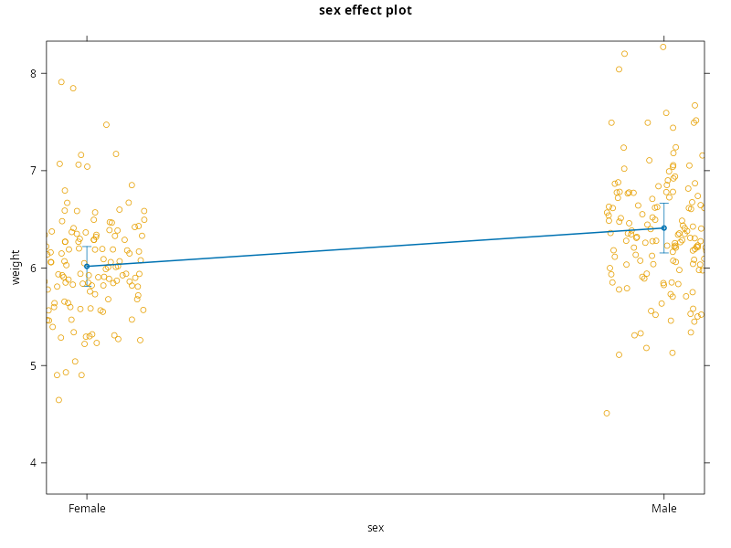
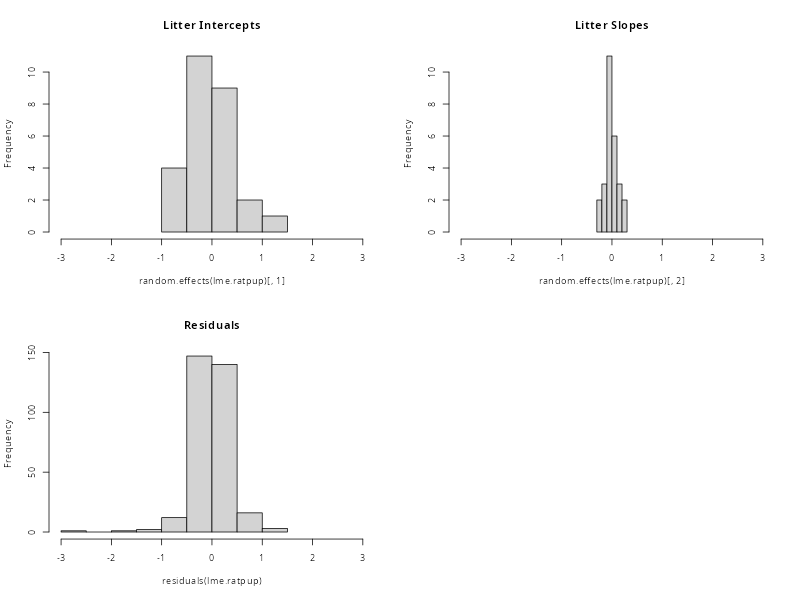
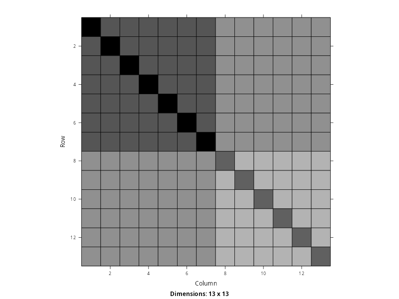
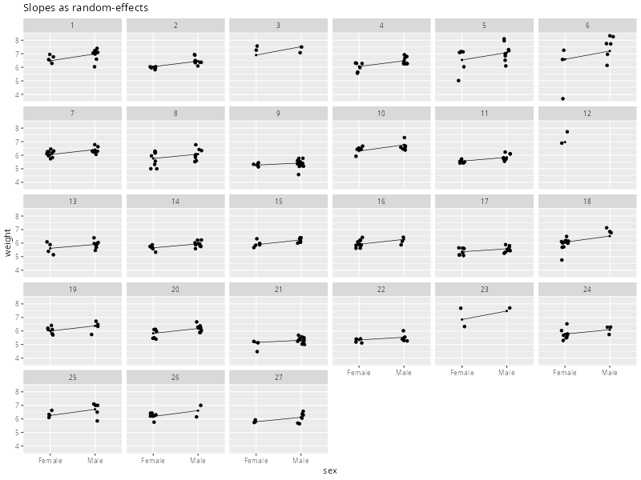
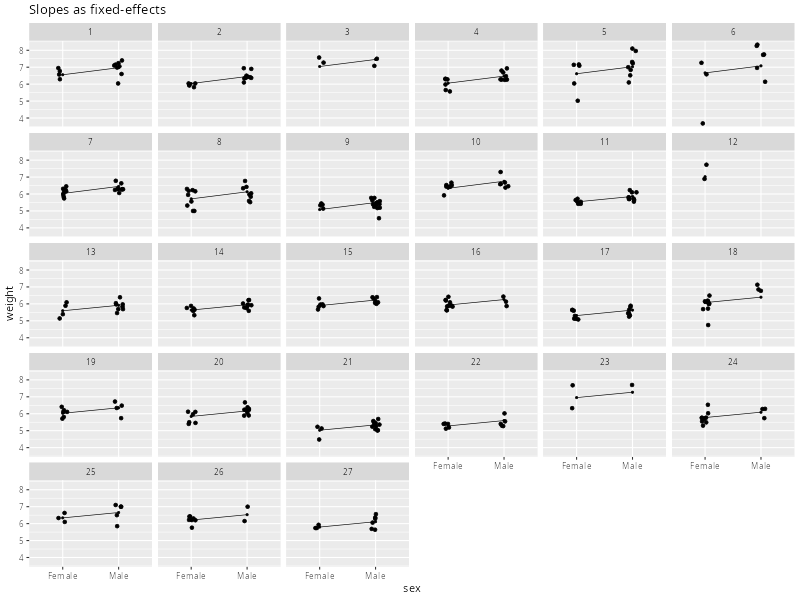

Implementing the Model in R#
As a final part of this lesson, we will see the process of fitting the model we have developed for the ratpup dataset using the lme() function in R. Despite the time spent building and considering this model, we will see that the specification and fitting process is deceptively quick. In a way, this belies the complexity and thought that sits behind the model. This is why the temptation is often to skip this process, especially when introducing these methods to students. However, skipping these steps can lead to confusion, conceptual misunderstandings and knowledge gaps. This is the reason why we have spent so long building to this point, rather than jumping straight to the R code.
Collapsing to Mixed-effects Form#
As we know, in order to fit a multilevel model using lme(), we need to collapse over the levels and specify the model in mixed-effects form. Our current two-level model is given below, where you can flip between the generic notation and the data labels using the tabs.
In order to turn this into a single-level mixed-effects models, we simply replace the terms at Level 1 with their equalities at Level 2. This is shown below
Finally, we collect like-terms together such that the fixed elements are together and the random elements are together. This is not strictly necessary, but makes the model easier to understand.
Specifying the Random-effects#
Given the mixed-effects form above, we need to think about how we express the random-effects to lme(). The fixed effects are easy, because this will just be weight ~ 1 + sex + treatment + sex:treatment. So, no different to what we have seen previously and effectively what we can see written above. However, the random-effects are currently written as
which need a moment’s thought in order to turn them into something lme() can use.
To begin with, no matter what we specify there will always be a final error term. This is the same as any regression model. We never tell lm() of gls() that we want errors because they are a fundamental component of the model. So, we do not need to worry about the final error term \(\eta^{(k)}_{ij}\)[1]. Because of this, all we really need to tell lme() about is
Now, notice that both of these terms relate to a specific litter \(k\), so another way of writing them would be conditional on the value of \(k\)
Now that we have moved \((k)\) out of the way, it starts to become clearer what these terms mean within a single litter. For a given litter \(k\), we have a constant value called \(\xi\) and an effect of sex \(j\) called \(\phi\). You can tell what these relate to by their indices. \(\xi\) has no indices and so must be the same value for every observation within litter \(k\). Similarly, \(\phi\) is indexed by \(j\), which corresponds to the variable sex. So its value is constant within a single sex but different between different sexes, within litter \(k\). So, if we were to write this as an R formula for a single litter it would be 1 + sex. To make this conditional on each litter, we use 1 + sex | litter, which can be read as an intercept and effect of sex per-litter. This is exactly the syntax we give to lme().
Implementation Using lme()#
Taking everything together, we can specify this model using lme(). In the code below, we choose to make the fixed-effects explicit by using the fixed= argument. We have also included the intercept explicitly in both formulas. Although neither are strictly necessary and can be omitted in future, the aim is just to make the function call as clear as possible.
library(nlme)
lme.ratpup <- lme(fixed = weight ~ 1 + treatment + sex + sex:treatment, # fixed-effects
random = ~ 1 + sex|litter, # random-effects
data = ratpup
)
As usual, we can call summary() on the returned object to see the results of the model estimation, as well as the inferential tests on the coefficients.
summary(lme.ratpup)
Linear mixed-effects model fit by REML
Data: ratpup
AIC BIC logLik
438.799 476.3564 -209.3995
Random effects:
Formula: ~1 + sex | litter
Structure: General positive-definite, Log-Cholesky parametrization
StdDev Corr
(Intercept) 0.5019186 (Intr)
sexMale 0.1554335 0.888
Residual 0.4005464
Fixed effects: weight ~ 1 + treatment + sex + sex:treatment
Value Std.Error DF t-value p-value
(Intercept) 6.200295 0.1685193 292 36.79278 0.0000
treatmentHigh -0.293458 0.2647520 24 -1.10843 0.2787
treatmentLow -0.315255 0.2376438 24 -1.32658 0.1971
sexMale 0.441064 0.0878297 292 5.02181 0.0000
treatmentHigh:sexMale -0.083920 0.1529263 292 -0.54876 0.5836
treatmentLow:sexMale -0.077938 0.1272381 292 -0.61253 0.5407
Correlation:
(Intr) trtmnH trtmnL sexMal trtH:M
treatmentHigh -0.637
treatmentLow -0.709 0.451
sexMale 0.262 -0.167 -0.186
treatmentHigh:sexMale -0.151 0.200 0.107 -0.574
treatmentLow:sexMale -0.181 0.115 0.277 -0.690 0.396
Standardized Within-Group Residuals:
Min Q1 Med Q3 Max
-7.26679495 -0.48614771 -0.01516592 0.55664433 2.81749336
Number of Observations: 322
Number of Groups: 27
Fixed-effects Tests#
Much as we saw last week, the fixed-effects tests are provided in the table alongside \(t\)-values and \(p\)-values derived from a simple implementation of effective degrees of freedom. We can see how this has partitioned the effects into those that apply between litters (24 degrees of freedom) and those that apply within litters (292 degrees of freedom).
We can also follow this up with omnibus tests, remembering that Anova() uses asymptotic inference.
library('car')
Anova(lme.ratpup)
Analysis of Deviance Table (Type II tests)
Response: weight
Chisq Df Pr(>Chisq)
treatment 1.7224 2 0.4227
sex 48.4288 1 3.425e-12 ***
treatment:sex 0.4862 2 0.7842
---
Signif. codes: 0 ‘***’ 0.001 ‘**’ 0.01 ‘*’ 0.05 ‘.’ 0.1 ‘ ’ 1
We can see that there is no significant interaction between sex and treatment, nor a main effect of treatment. The only aspect that is suggestive of an effect on weight is sex. Because this is a factor with two levels, we do not really need to follow it up. But for the sake of completeness, the test from emmeans is given below, alongside a plot. We need to remember to give the submodel argument to match the Type II test. Alternatively, we could drop the treatment:sex effect from the model and then carry on as usual.
library('emmeans')
library('effects')
emm <- emmeans(lme.ratpup, pairwise ~ sex, mode='asymptotic', submodel='type2')
emm.CI <- confint(emm)
print(emm$contrasts)
print(emm.CI$contrasts)
plot(effect('sex', lme.ratpup, residuals=TRUE), partial.residuals=list(smooth=FALSE))
NOTE: Results may be misleading due to involvement in interactions
contrast estimate SE df z.ratio p.value
Female - Male -0.393 0.0567 Inf -6.931 <.0001
Results are averaged over the levels of: treatment
Degrees-of-freedom method: fixed
contrast estimate SE df asymp.LCL asymp.UCL
Female - Male -0.393 0.0567 Inf -0.504 -0.282
Results are averaged over the levels of: treatment
Degrees-of-freedom method: fixed
Confidence level used: 0.95
NOTE: sex is not a high-order term in the model

From this we can see that male pups on average were 0.393 grams heavier than female pups, with a 95% confidence interval on the difference of \([0.282 \; 0.504]\). Because 0 sits outside this interval, the lower end of the interval appears meaningful and the test is significant with \(p < 0.001\), we conclude that a small but consistent difference in weight between male and female pups likely exists within the population. Some caution is needed here, given that these are asymptotic tests and CIs. Although the number of pups is large, the number of litters remains modest and more certainty could only come from sampling more litters. That being said, the treatment appears to not influence pup weight in any detectable fashion, either as a whole or differentially in male and female pups.
Exploring the Random-effects#
Although our inferential job is now done (to the best that we can, given everything we have discussed), it is worth spending some time exploring the model outputs and trying to gain a little more intuition. Notice in the output above that we have a description of the random effects that were fit using ~ 1 + sex|litter. This is repeated below
Random effects:
Formula: ~1 + sex | litter
Structure: General positive-definite, Log-Cholesky parametrization
StdDev Corr
(Intercept) 0.5019186 (Intr)
sexMale 0.1554335 0.888
Residual 0.4005464
We can see three variance estimates here (given as StdDev by taking square-roots), which is what we expect given our previous description of the model we are building. We can also see that lme() has automatically estimated a correlation between the intercept and the effect of sex. This is done by default as a very general modelling assuming, irrespective of the context of the data. This allows for a more flexible covariance structure which, in the current context, captures the idea that the effect of sex may relate to the average weight of each litter. For example, it might be that heavier litters also tend to show a larger sex difference in weight. This assumption can be switched off if we do not want it, but we almost always want to leave it in place. We will come back to this further below.
We can extract the realised values of the random effects, as shown below.
random.effects(lme.ratpup)
(Intercept) sexMale
1 0.283091048 0.066250415
2 -0.153500107 -0.033344540
3 0.701543759 0.178278121
4 -0.135362756 -0.031915416
5 0.340037227 0.105202850
6 0.390393255 0.169711123
7 -0.158110148 -0.063206359
8 -0.440380383 -0.124903334
9 -0.935772451 -0.277784567
10 0.108060557 0.011711707
11 -0.319291431 -0.089044095
12 1.080803194 0.297293631
13 -0.268172395 -0.079082057
14 -0.234212253 -0.069014833
15 -0.004590989 -0.009742578
16 0.030052979 -0.004193467
17 -0.521318592 -0.150524666
18 0.183390270 0.088278074
19 0.110812589 0.022647114
20 -0.057473372 -0.006617124
21 -0.749232516 -0.202209691
22 -0.566187590 -0.160408742
23 0.942642618 0.266500217
24 -0.131482487 -0.035557072
25 0.345791183 0.093074636
26 0.273784479 0.073033835
27 -0.115315687 -0.034433183
Here we can see that each of the 27 litters gets its own intercept and its own effect of sex. This is parameterised as it would be in any other regression model, using dummy variables. So there is a constraint in place that makes the intercept the weight of female pups and the slope the difference between male and female pups. In addition, these are not mean values, they are deflections. So we think of them as more like errors or deviations from the population estimates. For instance, the weight of female pups in litter 1 lies 0.283 grams above the expected value of the population. In this litter, the effect of sex is 0.066 grams larger than the population effect. By comparison, the weight of female pups in litter 4 lies 0.135 grams below the expected value of the population. In this litter, the effect of sex is 0.032 grams smaller than the population effect. This is important because these are not negative slopes, these are deflections from a population slope. The fixed-effect of sex is 0.44, so a slope would only become negative if its litter-specific effect were larger than -0.44. This is not true of any of the effects above and so all litters have a positive slope indicating male pups are always heavier than female pups.
Sex Effect in Litter 3
A good demonstration of the power of a mixed-effects model is to focus on Litter 3. Earlier, we plotted individual litters based on fitting separate normal linear models. When we did this the effect of sex in litter 3 was negative, indicating heavier female pups than male pups. By comparison, the effect of sex for litter 3 in the mixed-effects model is positive, despite what the data implies. Why? Because the mixed-effects model is performing regularisation. By pooling data across litters, the model can see that all other litters have positive effect of sex. As such, using all this information, it is less likely that litter 3 truly does have a negative effect of sex. So the estimate for this litter is pulled towards the average and is forced to be positive. This makes the fit within this single litter poorer, but across all litters the fit is much better. The solution has been regularised. By using all the information available, it has been constrained to something more sensible, even if this goes against the data. Again, this is carefully tuned bias to make the model more sensible overall.
Another important aspect to note here is that litter 12 had no male pups. Despite this, there is still a random slope of sex for this litter, representing the different between male and female pups.
random.effects(lme.ratpup)[12,]
(Intercept) sexMale
12 1.080803 0.2972936
How is this possible?
This is the process of pooling in action. On its own, this litter has no way to estimate a slope. However, the model is not working through each litter separately and fitting an individual regression model. This is a useful mental picture of what is happening, but in reality everything is fit at the same time. This means that the model can use information from across all litters as well as information from the covariance structure to infer what the most probable slope for that litter is, even if the data does not support it. This is one of the most powerful aspects of a mixed-effects model. When data are missing, the remaining information can be used to infer the missing values in a principled way. This requires no imputation on the part of the analyst, it is simply part of the framework.
Of importance here is that this requires a non-zero correlation to be estimated between the intercept and the slope. Without any male pups, the model has to use the intercept for litter 12 and the overall correlation between the intercept and the slope to predict what the slope is likely to be. If we force this correlation to be 0, the model has nothing to work with and the estimated slope for litter 12 is shrunk to zero. In this case, the model has no power left to impute missing values. This is another reason why the assumed correlation between the random effects is so important. If we force it to 0, we get
(Intercept) sexMale
12 1.119048 0
It is also worth remembering that it is the variance of the distribution of the random-effects that is of important. This what the StdDev column in the output table is referring to. We can plot these below so we get a sense that it is the width of these various distributions that is of most interest.

As we can see, the width of both the intercept and the residual distributions are similar, with the slopes much narrower. This pattern is echoed by the StdDev values in the output table and could be cause for wondering whether sex needs to be random in this model, given that the variance it explains is much smaller than either the intercepts or the residuals. We will come back to this further below.
The Marginal Covariance Structure#
It is also interesting to explore the variance-covariance structure that has been fit. This is a function of the random effects themselves, rather than being directly specified. However, if we want to think of a mixed-effects model in similar terms to a GLS model, we may wish to check that the implied structure is reasonable.
In the code below, we extract and visualise the covariance block for litter 15
library('Matrix')
Sigma <- getVarCov(lme.ratpup, type="marginal", individual="15")$`15` # Litter 15
print(Sigma)
Matrix::image(as(Sigma,'Matrix'))
1 2 3 4 5 6 7
1 0.5751104 0.4146730 0.4146730 0.4146730 0.4146730 0.4146730 0.4146730
2 0.4146730 0.5751104 0.4146730 0.4146730 0.4146730 0.4146730 0.4146730
3 0.4146730 0.4146730 0.5751104 0.4146730 0.4146730 0.4146730 0.4146730
4 0.4146730 0.4146730 0.4146730 0.5751104 0.4146730 0.4146730 0.4146730
5 0.4146730 0.4146730 0.4146730 0.4146730 0.5751104 0.4146730 0.4146730
6 0.4146730 0.4146730 0.4146730 0.4146730 0.4146730 0.5751104 0.4146730
7 0.4146730 0.4146730 0.4146730 0.4146730 0.4146730 0.4146730 0.5751104
8 0.3212178 0.3212178 0.3212178 0.3212178 0.3212178 0.3212178 0.3212178
9 0.3212178 0.3212178 0.3212178 0.3212178 0.3212178 0.3212178 0.3212178
10 0.3212178 0.3212178 0.3212178 0.3212178 0.3212178 0.3212178 0.3212178
11 0.3212178 0.3212178 0.3212178 0.3212178 0.3212178 0.3212178 0.3212178
12 0.3212178 0.3212178 0.3212178 0.3212178 0.3212178 0.3212178 0.3212178
13 0.3212178 0.3212178 0.3212178 0.3212178 0.3212178 0.3212178 0.3212178
8 9 10 11 12 13
1 0.3212178 0.3212178 0.3212178 0.3212178 0.3212178 0.3212178
2 0.3212178 0.3212178 0.3212178 0.3212178 0.3212178 0.3212178
3 0.3212178 0.3212178 0.3212178 0.3212178 0.3212178 0.3212178
4 0.3212178 0.3212178 0.3212178 0.3212178 0.3212178 0.3212178
5 0.3212178 0.3212178 0.3212178 0.3212178 0.3212178 0.3212178
6 0.3212178 0.3212178 0.3212178 0.3212178 0.3212178 0.3212178
7 0.3212178 0.3212178 0.3212178 0.3212178 0.3212178 0.3212178
8 0.4123597 0.2519223 0.2519223 0.2519223 0.2519223 0.2519223
9 0.2519223 0.4123597 0.2519223 0.2519223 0.2519223 0.2519223
10 0.2519223 0.2519223 0.4123597 0.2519223 0.2519223 0.2519223
11 0.2519223 0.2519223 0.2519223 0.4123597 0.2519223 0.2519223
12 0.2519223 0.2519223 0.2519223 0.2519223 0.4123597 0.2519223
13 0.2519223 0.2519223 0.2519223 0.2519223 0.2519223 0.4123597

As we can see, this litter consisted of 13 pups. The first 7 were female and the final 6 were male. Here we can see that the covariance structure has resulted in several features:
Male pups and female pups have different variances
All male pups within a litter share the same covariance
All female pups within a litter share the same covariance
All male-female pairs within a litter share the same covariance
Importantly, there are three different types of dependence represented here: male-male, female-female and female-male. So, all pups within a litter are correlated, but this correlation further depends upon sex. This is the essence of including sex as a random-effect, alongside the random intercept.
We can expand this further by viewing the full covariance structure, using the fullVarCov() function defined in the previous lesson. This gives:
Sigma.Big <- fullVarCov(lme.ratpup)
image(Sigma.Big)

Here we can see how the size of each litter corresponds to the dimensions of its covariance block. For instance, litter 3 is very small whereas litter 7 is quite large. Within each covariance block, we can also see the patterns that correspond to the male pups, the female pups and the correlation between them. In addition, notice that the covariance structure is 0 between litters. This is why we considered litter to be the “boundary of dependency”. Everything within a litter is correlated, everything between litters is independent. In effect, litter is being treated the same way that subject would be treated under repeated measurements.
Should sex be Fixed or Random?#
As a final topic, we will return to the topic of whether sex should be treated as a fixed-effect or a random-effect. Earlier we discussed how an argument could be made either way, so now we actually investigate what the data suggest about these options. Below, we fit a model with and without sex in the random-effects structure and compare them[2].
lme.mod.0 <- lme(weight ~ sex*treatment, random= ~ 1|litter, data=ratpup, method='ML', control=lmeControl(opt='optim'))
lme.mod.1 <- lme(weight ~ sex*treatment, random= ~ 1 + sex|litter, data=ratpup, method='ML', control=lmeControl(opt='optim'))
anova(lme.mod.0,lme.mod.1)
Model df AIC BIC logLik Test L.Ratio p-value
lme.mod.0 1 8 425.9672 456.1636 -204.9836
lme.mod.1 2 10 425.2734 463.0189 -202.6367 1 vs 2 4.693801 0.0957
As discussed previously, we tend to prefer BIC here due to its greater sensitivity to the number of parameters. The change in BIC between these models is \(\Delta_{\text{BIC}} = 463.0189 - 456.1663 = 6.8526\). Given our interpretational criteria from last semester, this suggests strong evidence in favour of the lower BIC model. So, it seems the data suggest that the more parsimonious model is
lme.ratpup <- lme(fixed = weight ~ 1 + treatment + sex + sex:treatment, # fixed-effects
random = ~ 1|litter, # random-effects
data = ratpup
)
Anova(lme.ratpup)
Analysis of Deviance Table (Type II tests)
Response: weight
Chisq Df Pr(>Chisq)
treatment 2.5028 2 0.2861
sex 56.8378 1 4.733e-14 ***
treatment:sex 0.9707 2 0.6155
---
Signif. codes: 0 ‘***’ 0.001 ‘**’ 0.01 ‘*’ 0.05 ‘.’ 0.1 ‘ ’ 1
which does not change our conclusions in any substantive way.
By way of visual comparison, the plots below show the litter-specific models under each assumption. Notice that ggplot2 will complain because litter 12 is missing male pups. This can be safely ignored, but could be a useful indicator if this had not been spotted prior to this point. We can also see how litter 3 has been given a positive slope, which is not what the data in this litter implies, but is what the model as a whole across litters implies.

`geom_line()`: Each group consists of only one observation.
ℹ Do you need to adjust the group aesthetic?

`geom_line()`: Each group consists of only one observation.
ℹ Do you need to adjust the group aesthetic?